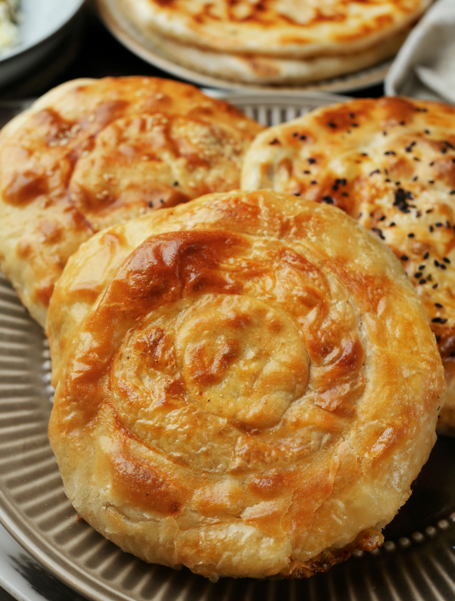

Плацинды — молдавские лепешки с разнообразными начинками, вертуты же ближе к пирогам, и хотя их часто тоже называют плациндами, и готовятся они из идентичных ингредиентов, но, благодаря разной технике приготовления, получается совершенно иной продукт: что-то среднее между несладким штруделем и баницей. Хотя есть и промежуточный вариант: вертуты жарятся на сковородке, как лепешки. Начинки могут быть разнообразными: с картошкой и жареным луком, с капустой, с творогом или рассольным сыром и зеленью. А еще сладкие, например с тыквой. Основной секрет вертут — в тонкой раскатке теста. Лучше использовать длинную тонкую скалку с зауженными концами. Мастерицы могут раскатывать сразу по несколько лепешек за раз, так что умение приходит с практикой. Если раскатать тонко сразу не получается, можно слегка растягивать тесто руками, и нестрашно, если где-то порвется, небольшая прореха не будет заметна, когда станете скручивать тесто с начинкой в рулет. Но нужно помнить, что для вертут тесто должно быть раскатано максимально тонко, до полупрозрачности. Для плацинд его не обязательно раскатывать толщиной с лист бумаги, достаточно 1–2 мм. После того как выложили начинку, края теста можно завернуть несколькими способами. Чаще всего заворачивают «звездой»: для этого нужно подогнуть края лепешки к центру с пяти сторон, потом слегка растянуть углы и тоже собрать к середине. Можно собрать края теста складочками, как на хинкали, или завернуть края к центру волнами, по часовой стрелке, в 7–8 подворотов, соединить и защипнуть концы в середине.
для теста:
для картофельной начинки:
для творожной начинки:
для капустной начинки:
для тыквенной начинки:
для вертут: